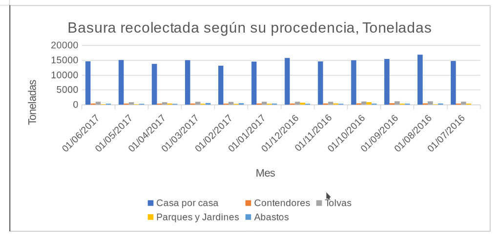
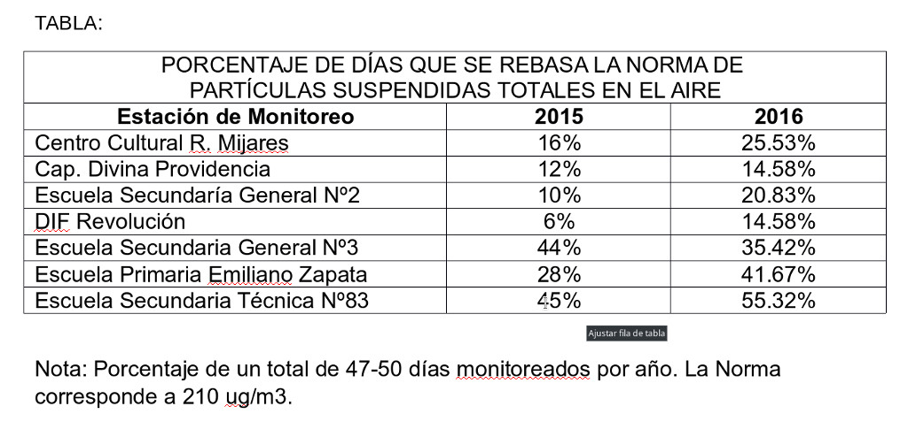
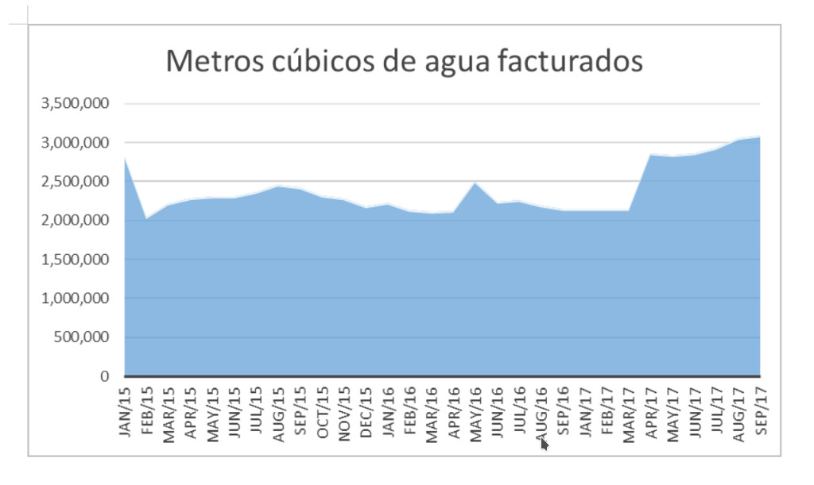

Medir la calidad de vida de una ciudad en función de temas como el agua, aire, residuos o biodiversidad cada vez se vuelve más importante. El ranking de las ciudades saludables, pasa por estos temas dejando claro la importancia que los gobiernos y ciudadanos le dan al medio ambiente.
En Torreón existe el Sistema de Información Ambiental, una matriz de indicadores creada por la Dirección General de Medio Ambiente de la Administración Municipal 2014-2017, bajo la dirección de Susana Estens de la Garza y cuyos resultados ya fueron incorporados el Sistema Metropolitano de Indicadores de la plataforma del IMPLAN.
¿En qué hemos avanzado y qué falta por atender en el tema medio ambiental en la ciudad? Este sistema de información nos mide en los temas como el manejo de residuos sólidos, manejo de podas, escombros y llantas, calidad el aire, del agua, cambio climático, áreas verdes y áreas naturales protegidas.
En el tema de residuos hay aspectos positivos. De acuerdo con esta investigación el servicio de recolección de residuos es confiable, pues es prestado al 99% de la ciudad.
Sin embargo es necesario contar con un Programa Municipal para la Gestión Integral de Residuos, donde se plasmen los programas de valorización, reciclaje y aprovechamiento de los mismos. Se deben tener también estrategias para la recolección comercial e industrial. “La sociedad debe reconocer el trabajo de los recolectores y colaborar entregando los reciclables limpios, secos y separados de tal forma que haya un beneficio social, ambiental y económico”, señala el estudio.
Un dato relevante es el que se recolectan en promedio 530 toneladas de basura por día, de las cuales el 1.51% son podas y residuos vegetales que pudieran transformarse en composta. En cuanto a los residuos de manejo especial (podas, escombro y llantas), Torreón cuenta con un sitio para la disposición de residuos de la construcción y demolición, el Cañón del Indio, pero existen lugares donde clandestinamente se depositan residuos como el escombro, podas, llantas y electrónicos: el cauce del Río Nazas, la Vega de Caracol y ejidos.
En el tema de calidad del aire, Torreón cuenta con 3 equipos manuales para la medición de partículas menores a 10 micras cuyos resultados se publicaron semanalmente en redes sociales. No obstante se requiere comunicar en tiempo real a la población cuál es la calidad del aire en diversos puntos de la ciudad y falta equipamiento material, lo ideal de acuerdo con la químico Susana Estens es contar con diez estaciones de monitoreo ambiental. El tema es de vital importancia, pues la contaminación atmosférica es la causante de 1 de cada 9 muertes de acuerdo con la Organización Mundial de la Salud.
Por otro lado, el 98% de la población cuenta con servicio de agua potable y el 90.64 % del agua es tratada en la Planta Tratadora de Aguas Residuales, pero aún se requiere sectorizar la ciudad con plantas tratadoras de agua más pequeñas y eficientes, de tal forma que se pueda tratar, y utilizar, el agua en diferentes puntos. También es recomendación de este estudio, que las grandes empresas consumidoras de agua puedan reintegrar el agua tratada para que sea utilizada en áreas verdes de la ciudad, a través de una red denominada línea morada.
El déficit que presenta el acuífero principal de La Laguna es quizás el tema más preocupante en este rubro, de acuerdo con la Conagua la recarga anual de este acuífero es de 518.9 millones de metros cúbicos al año y la extracción total es de es de 1,221.8 millones de metros cúbicos al año. Todo esto ha ocasionado un abatimiento del nivel de agua subterránea.
Existen otras preocupaciones, ya que según este informe cinco pozos de agua en el 2017 rebasaron la norma NOM 127-SSA1 de arsénico.
En cuanto al tema de áreas verdes el indicador actualizado en 2017 es de 8.23 m2 de área verde por habitante, de acuerdo con INEGI. La recomendación es que el mantenimiento de las áreas verdes debe contribuir a la cosecha de agua de lluvia para lograr dos objetivos: a) disminución de las áreas inundadas por las lluvias y b) utilización del agua para el sostenimiento de los árboles y plantas. Otro indicador importante es que existen más de 700 espacios catalogados como plazas, ubicados en el sector urbano.
Torreón cuenta con el área natural protegida Reserva Municipal Sierra y Cañón de Jimulco, cuya importancia ambiental debe ser más valorada por la población urbana del municipio y asimismo se requiere mayor captación de recursos económicos para su conservación. Otro logro para la ciudad es que ya existe un Programa de Ordenamiento Ecológico Territorial, un instrumento de planeación para el presente y futuro.
Este Sistema de Información se elaboró con la revisión de instrumentos como el ISO 37120:2014, ISO 18091:2014, IMCO, ONU-Hábitat, Agenda para el Desarrollo Municipal y del Sistema Metropolitano de Indicadores del IMPLAN.
Basura recolectada según su procedencia, toneladas.

Fuente: Portal de Datos Abiertos de Torreón, Dirección de Limpieza. 2018, Toneladas de basura recolectada y su procedencia. http://datostrc.gob.mx/datasets/ver/32931
Partículas suspendidas totales en el aire

Nota: Porcentaje de un total de 47-50 días monitoreados por año. La Norma corresponde a 210 ug/m3.
Metros cúbicos de agua facturados
